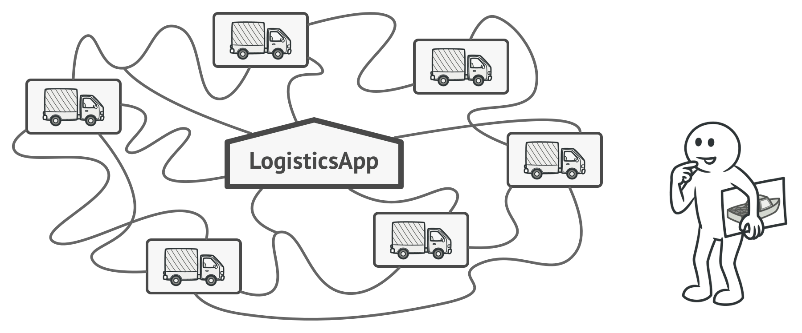
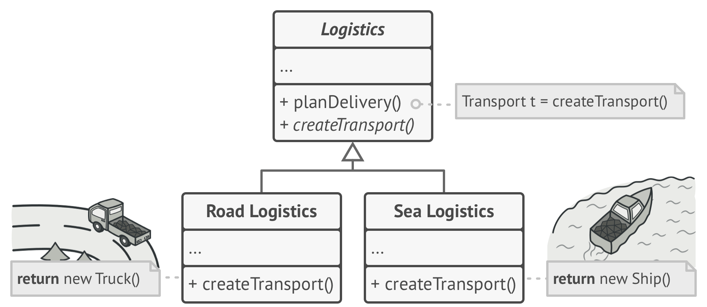
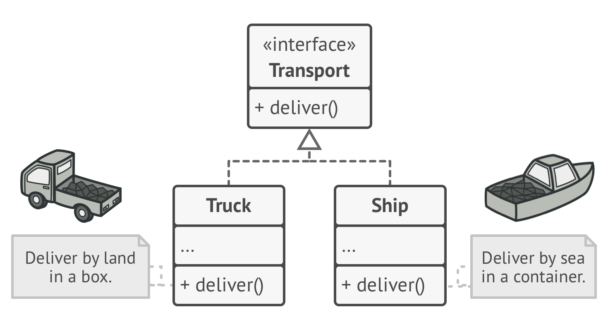
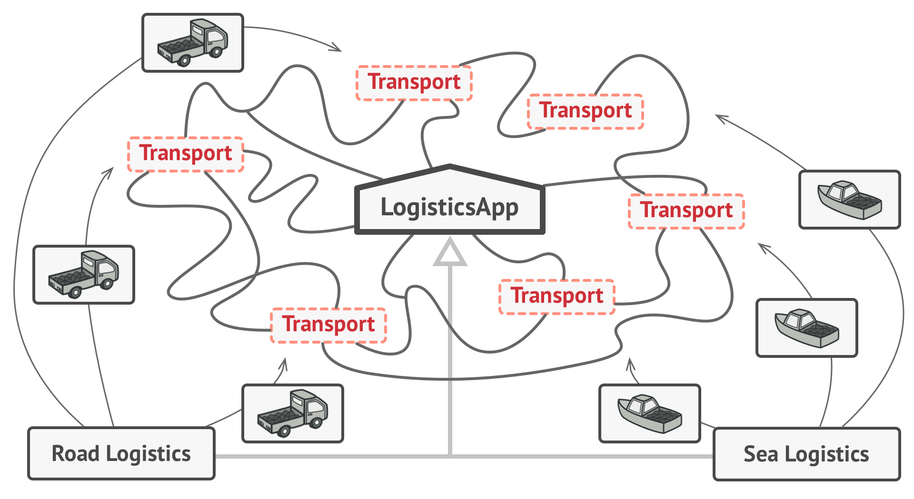
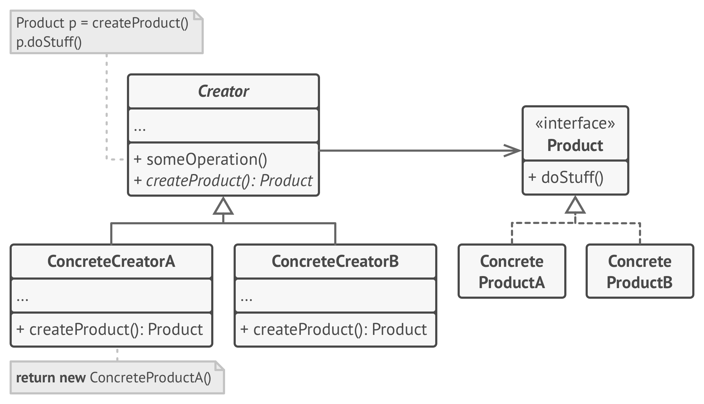

Factory is a creational design pattern that provides an interface for creating objects in a superclass, but allows subclasses to alter the type of objects that will be created.

Imagine that you’re creating a logistics management application. The first version of your app can only
handle transportation by trucks, so the bulk of your code lives inside the Truck class.

Great news, right? But how about the code? At present, most of your code is coupled to the
Truck class. Adding Ships into the app would require making changes to the entire
codebase. Moreover, if later you decide to add another type of transportation to the app, you will probably
need to make all of these changes again.
As a result, you will end up with pretty nasty code, riddled with conditionals that switch the app’s behavior depending on the class of transportation objects.
The Factory Method pattern suggests that you replace direct object construction calls (using the
new operator) with calls to a special factory method. Don’t worry: the objects are
still created via the new operator, but it’s being called from within the factory method.
Objects returned by a factory method are often referred to as “products.”

At first glance, this change may look pointless: we just moved the constructor call from one part of the program to another. However, consider this: now you can override the factory method in a subclass and change the class of products being created by the method.
There’s a slight limitation though: subclasses may return different types of products only if these products have a common base class or interface. Also, the factory method in the base class should have its return type declared as this interface.

For example, both Truck and Ship classes should implement the
Transport interface, which declares a method called deliver. Each class implements
this method differently: trucks deliver cargo by land, ships deliver cargo by sea. The factory method in the
RoadLogistics class returns truck objects, whereas the factory method in the
SeaLogistics class returns ships.

The code that uses the factory method (often called the client code) doesn’t see a difference
between the actual products returned by various subclasses. The client treats all the products as abstract
Transport. The client knows that all transport objects are supposed to have the
deliver method, but exactly how it works isn’t important to the client.

- The Product declares the interface, which is common to all objects that can be produced by the creator and its subclasses.
- Concrete Products are different implementations of the product interface.
-
The Creator class declares the factory method that returns new product objects. It’s important that the return type of this method matches the product interface.
You can declare the factory method as abstract to force all subclasses to implement their own versions of the method. As an alternative, the base factory method can return some default product type.
Note, despite its name, product creation is not the primary responsibility of the creator. Usually, the creator class already has some core business logic related to products. The factory method helps to decouple this logic from the concrete product classes. Here is an analogy: a large software development company can have a training department for programmers. However, the primary function of the company as a whole is still writing code, not producing programmers.
- Use the Factory Method when you don’t know beforehand the exact types and dependencies of the objects your code should work with.
-
The Factory Method separates product construction code from the code that actually uses the product. Therefore it’s easier to extend the product construction code independently from the rest of the code.
For example, to add a new product type to the app, you’ll only need to create a new creator subclass and override the factory method in it.
- Use the Factory Method when you want to provide users of your library or framework with a way to extend its internal components.
-
Inheritance is probably the easiest way to extend the default behavior of a library or framework. But how would the framework recognize that your subclass should be used instead of a standard component?
The solution is to reduce the code that constructs components across the framework into a single factory method and let anyone override this method in addition to extending the component itself.
Let’s see how that would work. Imagine that you write an app using an open source UI framework. Your app should have round buttons, but the framework only provides square ones. You extend the standard
Buttonclass with a gloriousRoundButtonsubclass. But now you need to tell the mainUIFrameworkclass to use the new button subclass instead of a default one.To achieve this, you create a subclass
UIWithRoundButtonsfrom a base framework class and override itscreateButtonmethod. While this method returnsButtonobjects in the base class, you make your subclass returnRoundButtonobjects. Now use theUIWithRoundButtonsclass instead ofUIFramework. And that’s about it! -
Use the Factory Method when you want to save system resources by reusing existing objects instead of rebuilding them each time.
- The pattern provides a couple of generic interfaces for both collections and iterators. Given that your code now uses these interfaces, it’ll still work if you pass it various kinds of collections and iterators that implement these interfaces.